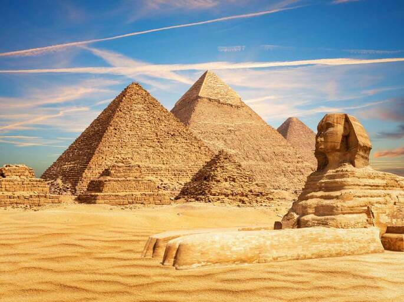
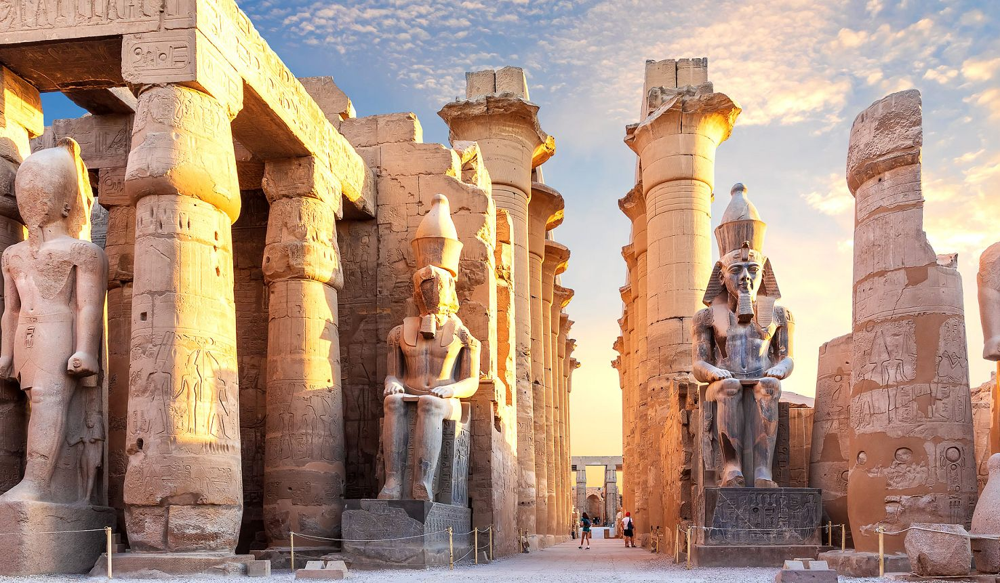

O que visitar
- Pirâmides de Gizé: símbolo mundial e sede da Grande Pirâmide.
- Templo de Karnak: descobertas arqueológicas e arquitetura grandiosa.
- Luxor: vale dos reis e templos às margens do Nilo.



Links para mais informações
Dicas para viajar
- Contrate guias locais para entender melhor a história.
- Mantenha-se hidratado e use proteção solar no deserto.
- Respeite costumes locais, principalmente em áreas religiosas.